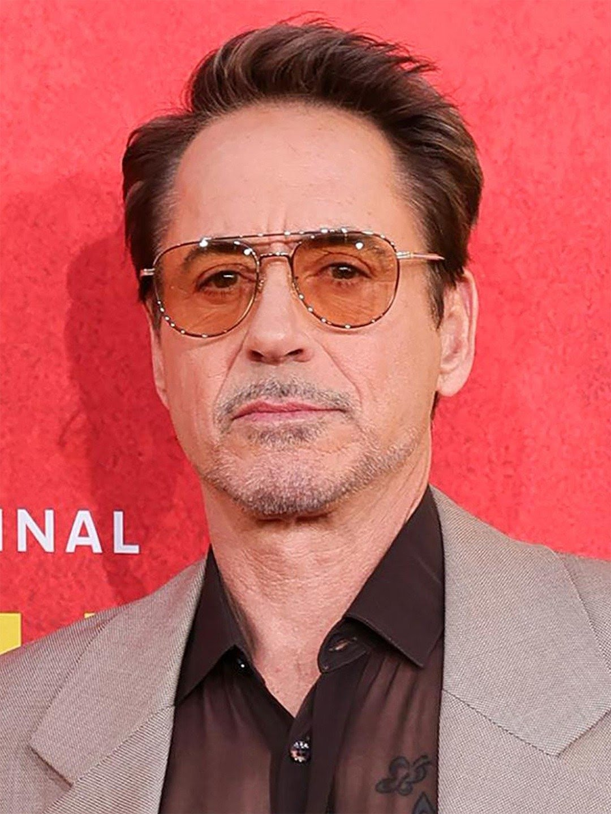

Robert downey Jr.
Biography
Robert Downey Jr. has evolved into one of the most respected actors in Hollywood. With an amazing list of credits to his name, he has managed to stay new and fresh even after over four decades in the business. Downey was born April 4, 1965 in Manhattan, New York, the son of writer, director and filmographer Robert Downey Sr. and actress Elsie Downey (née Elsie Ann Ford). Robert's father is of half Lithuanian Jewish, one quarter Hungarian Jewish, and one quarter Irish, descent, while Robert's mother was of English, Scottish, German, and Swiss-German ancestry. Robert and his sister, Allyson Downey, were immersed in film and the performing arts from a very young age, leading Downey Jr. to study at the Stagedoor Manor Performing Arts Training Center in upstate New York, before moving to California with his father following his parents' 1978 divorce. In 1982, he dropped out of Santa Monica High School to pursue acting full time. Downey Sr., himself a drug addict, exposed his son to drugs at a very early age, and Downey Jr. would go on to struggle with abuse for decades. Downey Jr. made his debut as an actor at the age of five in the film Pound (1970), written and directed by his father, Robert Downey Sr.. He built his film repertoire throughout the 1980s and 1990s with roles in Tuff Turf (1985), Weird Science (1985), True Believer (1989), and Wonder Boys (2000) among many others. In 1992, Downey received an Academy Award nomination and won the BAFTA (British Academy Award) for Best Actor for his performance in the title role of Chaplin (1992). In Robert Altman's Short Cuts (1993), he appeared as an aspiring film make-up artist whose best friend commits murder. In Oliver Stone's Natural Born Killers (1994), with Woody Harrelson and Juliette Lewis, Downey starred as a tabloid TV journalist who exploits a murderous couple's killing spree to boost his ratings. For the comedy Heart and Souls (1993), Downey starred as a young man with a special relationship with four ghosts. In 1995, Downey starred in Restoration (1995), with Hugh Grant, Meg Ryan and Ian McKellen, directed by Michael Hoffman. Also that year, he starred in Richard III (1995), in which he appears opposite his Restoration (1995) co-star McKellen. In 1997, Downey was seen in Robert Altman's The Gingerbread Man (1998), alongside Kenneth Branagh, Daryl Hannah and Embeth Davidtz; in One Night Stand (1997), directed by Mike Figgis and starring Wesley Snipes and Nastassja Kinski; and in Hugo Pool (1997), directed by his father, Robert Downey Sr. and starring Sean Penn and Patrick Dempsey. In September of 1999, Downey appeared in Black & White (1999), written and directed by James Toback, along with Ben Stiller, Elijah Wood, Gaby Hoffmann, Brooke Shields and Claudia Schiffer. In January of 1999, he starred with Annette Bening and Aidan Quinn in In Dreams (1999), directed by Neil Jordan. In 2000, Downey co-starred with Michael Douglas and Tobey Maguire in Wonder Boys (2000), directed by Curtis Hanson. In this dramatic comedy, Downey played the role of a bisexual literary agent. In 2001, Downey made his prime-time television debut when he joined the cast of the Fox-TV series Ally McBeal (1997) as attorney "Larry Paul". For this role, he won the Golden Globe Award for Best Performance by an Actor in a Supporting Role in a Series, Mini-Series or Motion Picture Made for Television, as well as the Screen Actors Guild Award for Outstanding Performance by a Male in a Comedy Series. In addition, Downey was nominated for an Emmy for Outstanding Supporting Actor in a Comedy Series. The actor's drug-related problems escalated from 1996 to 2001, leading to arrests, rehab visits and incarcerations, and he was eventually fired from Ally McBeal (1997). Emerging clean and sober in 2003, Downey Jr. began to rebuild his career. He marked his debut into music with his debut album, titled "The Futurist", on the Sony Classics Label on November 23rd, 2004. The album's eight original songs, that Downey wrote, and his two musical numbers debuting as cover songs revealed his sultry singing voice and his musical talents. Downey displayed his versatility in two different films in October 2003: the musical/drama The Singing Detective (2003), a remake of the BBC hit of the same name, and the thriller Gothika (2003) starring Halle Berry and Penélope Cruz. Downey starred in powerful yet humbling roles inspired by real-life accounts of some of history's most precious kept secrets, including Richard Linklater's A Scanner Darkly (2006) in 2006 co-starring Keanu Reeves, Winona Ryder and Woody Harrelson, and Fur: An Imaginary Portrait of Diane Arbus (2006) co-starring Nicole Kidman, a film inspired by the life of Diane Arbus, the revered photographer whose images captured attention in the early 1960s. These roles exhibited Downey's momentum from the previous year of 2005, in which he starred in the Academy Award®-nominated feature film Good Night, and Good Luck. (2005), directed by George Clooney and in Shane Black's action comedy Kiss Kiss Bang Bang (2005) co-starring Val Kilmer. In 2007, he co-starred in David Fincher's suspenseful Zodiac (2007), alongside Jake Gyllenhaal and Mark Ruffalo, about the notorious serial killer who haunted San Francisco during the 1970s. In May 2008, Downey achieved critical acclaim and worldwide box office success for his starring role in Iron Man (2008), Jon Favreau's big-screen rendering of the Marvel comic book superhero. The film co-starred Gwyneth Paltrow, Jeff Bridges and Terrence Howard. In August of 2008, Downey starred with Ben Stiller and Jack Black in the comedy Tropic Thunder (2008), and went on to receive an Academy Award®-nomination for Best Supporting Actor for his, Kirk Lazarus. In December 2009, Downey starred in the action-adventure Sherlock Holmes (2009). The film, directed by Guy Ritchie, co-starred Jude Law and Rachel McAdams and earned Downey a Golden Globe for Best Performance by an Actor in a Motion Picture - Comedy or Musical in January of 2010. In early Summer 2010, Downey re-teamed with director Jon Favreau and reprised his role as "Tony Stark/Iron Man" in the hugely successful sequel to the original film, Iron Man 2 (2010), starring Gwyneth Paltrow, Scarlett Johansson, Samuel L. Jackson and Mickey Rourke. Downey next starred in Due Date (2010), a comedy directed by Todd Phillips, in which he plays the role of an expectant father on a road trip racing to get back in time for the birth of his first child. Due Date (2010), starring The Hangover (2009)'s Zach Galifianakis, was released in November 2010. Downey was honored by Time Magazine's "Time 100" in 2008, an annual list of the 100 most influential people in the world. His laurels include two Academy Award nominations, three Golden Globe wins, numerous other award nominations and wins, and tremendous popular and commercial success, particularly in his roles as Sherlock Holmes and Tony Stark (the latter of which he has so far played in Iron Man (2008), Iron Man 2 (2010), The Avengers (2012), Iron Man 3 (2013), and Avengers: Age of Ultron (2015). For three consecutive years, from 2012 to 2015, Downey has topped the Forbes list of Hollywood's highest-paid actors, making an estimated $80 million in earnings between June 2014 and June 2015. In 2005, Downey Jr. married Susan Downey, with whom he has two children. Downey also has another son, Indio Falconer Downey, born 1993, from his first marriage to Deborah Falconer, from whom he was officially divorced in 2004. Robert has jump-started the Team Downey Production Company with wife Susan Downey. - IMDb Mini Biography By: Anonymous, Rogers & Cowan, and Pedro Borges
Movies
- Movie 1 (2020)
- Movie 2 (2018)
- Movie 3 (2015)
Awards
- Best Actor - Film Festival 2021
- Outstanding Performance - Awards 2019